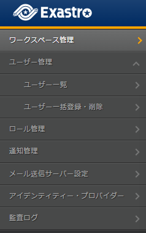

6. Mail server settings¶
6.1. Introduction¶
This document explains the Mail server settings in the Exastro Suite.
6.2. Mail server settings¶
In order to recieve event notifications from IT Automation and OASE, the user must configure a mail server for sending mails.
6.2.1. Registering Mail server¶
Follow the steps below to register a Mail server.
- Log in to the Exastro system as the Organization administrator.
- From the menu, click .
- Doing so will display the page. Input the Mail sending server information and click Register.This will display a Forgot password button on the login page.

表 6.3 Registering Mail sending server settings¶ Item name
Description
SMTP server host
Specify the SMTP server host.Decryption method
Specify the decryption method.SMTP server port
Specify the port for the SMTP server.With authentication
Tick if SMTP server is using User authentication.Authentication user
Input the SMTP server's authentication user ID.Authentication password
Input the SMTP server's authentication password.Source mail address(From)
Input the Source mail address.Source display name
Input the name that will be displayed for the source.Reply mail address(Reply-to)
Input a mail address for where the mail will be sent.Reply display name
Input the name that will be displayed for the replier.Sender mail address(Envelope-From)
Input a mail address for the sender.

6.2.2. Deleting the Mail sending server¶
Follow the stebs below to delete Mail sending server settings.
- Log in to the System as the Organization administrator.
- From the menu, click .
- The menu will be displayed. Click Delete settings.

- Doing so will display a message asking for confirmation. Input Delete and click Yes, delete.This will remove the Forgot password button from the login page.

Tip
It is not possible to restore Mail sending server settings once deleted.


{kind=link}